import pandas as pd
import matplotlib.pyplot as plt
import geopandas as gpddf = pd.read_csv("mongolia_grid_10km.csv")print(df.columns.tolist())['system:index', 'changed_mean', 'changed_mode', 'degradation_mean', 'degradation_mode', 'lulc_early_mean', 'lulc_early_mode', 'lulc_recent_mean', 'lulc_recent_mode', 'net_change', 'recovery_mean', 'recovery_mode', '.geo']cols = ["degradation_mean", "recovery_mean", "net_change", "changed_mean"]
print(df[cols].head())
print(df[cols].describe()) degradation_mean recovery_mean net_change changed_mean
0 NaN NaN 0.0 0.000000
1 NaN NaN 0.0 0.000000
2 0.0 0.0 0.0 0.152266
3 0.0 0.0 0.0 0.259939
4 NaN NaN 0.0 0.000000
degradation_mean recovery_mean net_change changed_mean
count 6283.000000 6283.000000 7731.00000 7031.000000
mean 0.101839 0.070598 -0.02539 0.193102
std 0.205320 0.133624 0.21261 0.187766
min 0.000000 0.000000 -1.00000 0.000000
25% 0.000000 0.000000 0.00000 0.040000
50% 0.000000 0.006757 0.00000 0.147500
75% 0.083333 0.081081 0.01000 0.283750
max 1.000000 1.000000 1.00000 0.985714print(df[cols].isna().sum())degradation_mean 1448
recovery_mean 1448
net_change 0
changed_mean 700
dtype: int64for col in ["degradation_mean", "recovery_mean", "net_change", "changed_mean"]:
plt.figure(figsize=(6, 4))
df[col].hist(bins=30)
plt.title(col)
plt.xlabel(col)
plt.ylabel("Count")
plt.tight_layout()
plt.show()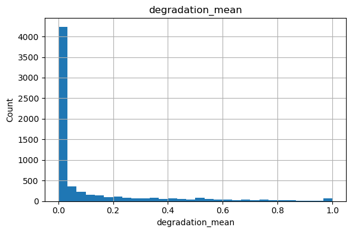
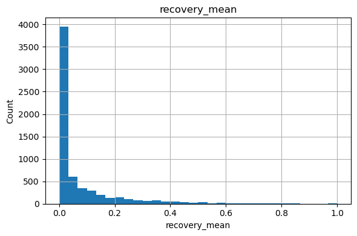
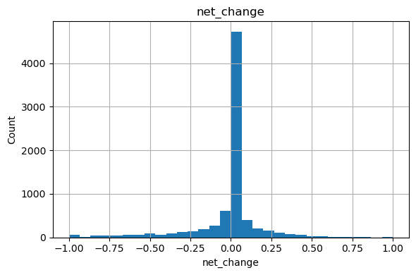
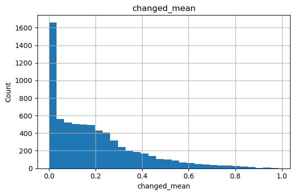
na_share = (df.isna().sum() / len(df) * 100).round(2)
print(na_share.sort_values(ascending=False))degradation_mode 18.73
degradation_mean 18.73
recovery_mode 18.73
recovery_mean 18.73
changed_mode 9.05
lulc_recent_mode 9.05
changed_mean 9.05
lulc_early_mean 9.05
lulc_early_mode 9.05
lulc_recent_mean 9.05
system:index 0.00
net_change 0.00
.geo 0.00
dtype: float64for col in ["changed_mode", "degradation_mode", "recovery_mode",
"lulc_early_mode", "lulc_recent_mode"]:
print("\n", col)
print(df[col].value_counts(dropna=False).head(10))
changed_mode
changed_mode
0.0 6469
NaN 700
1.0 562
Name: count, dtype: int64
degradation_mode
degradation_mode
0.0 5848
NaN 1448
1.0 435
Name: count, dtype: int64
recovery_mode
recovery_mode
0.0 6160
NaN 1448
1.0 123
Name: count, dtype: int64
lulc_early_mode
lulc_early_mode
7.0 3341
4.0 2502
2.0 985
NaN 700
1.0 104
5.0 77
8.0 12
6.0 6
0.0 3
7.0 1
Name: count, dtype: int64
lulc_recent_mode
lulc_recent_mode
7.0 3454
4.0 2378
2.0 1001
NaN 700
1.0 106
5.0 78
6.0 7
8.0 3
0.0 3
7.0 1
Name: count, dtype: int64df = pd.read_csv("mongolia_grid_10km.csv")
print("nature：", len(df))
print("\n列名：")
print(df.columns.tolist())nature： 7731
列名：
['system:index', 'changed_mean', 'changed_mode', 'degradation_mean', 'degradation_mode', 'lulc_early_mean', 'lulc_early_mode', 'lulc_recent_mean', 'lulc_recent_mode', 'net_change', 'recovery_mean', 'recovery_mode', '.geo']# 2. 先看 NA 占比
# =========================
na_share = (df.isna().sum() / len(df) * 100).round(2)
print("\nNA percentage（%）：")
print(na_share.sort_values(ascending=False))
NA percentage（%）：
degradation_mode 18.73
degradation_mean 18.73
recovery_mode 18.73
recovery_mean 18.73
changed_mode 9.05
lulc_recent_mode 9.05
changed_mean 9.05
lulc_early_mean 9.05
lulc_early_mode 9.05
lulc_recent_mean 9.05
system:index 0.00
net_change 0.00
.geo 0.00
dtype: float64# 3. 去掉真正空网格
# changed_mean 为 NA 的格网，说明这个格子本身没有有效像元
# =========================
df_clean = df[df["changed_mean"].notna()].copy()
print("\nNumber of rows after removing empty cells：", len(df_clean))
Number of rows after removing empty cells： 7031# =========================
# 4. 把“无变化格网”的 NA 补成 0
# 如果 changed_mean = 0，但 degradation/recovery 是 NA，
# 这里不是坏数据，而是“没有变化”
# =========================
df_clean["degradation_mean"] = df_clean["degradation_mean"].fillna(0)
df_clean["recovery_mean"] = df_clean["recovery_mean"].fillna(0)# 5. 构造更稳的 all-pixel 指标
# 原始 degradation_mean / recovery_mean 更像 changed pixels 内部比例
# 所以乘以 changed_mean，得到整个格网口径
# =========================
df_clean["degradation_share_allpx"] = (
df_clean["changed_mean"] * df_clean["degradation_mean"]
)
df_clean["recovery_share_allpx"] = (
df_clean["changed_mean"] * df_clean["recovery_mean"]
)
df_clean["net_change_allpx"] = (
df_clean["recovery_share_allpx"] - df_clean["degradation_share_allpx"]
)# 6. 先不重点解释这些列
# land-cover label 的 mean 没有很强解释意义
# 二值 mode 通常信息量也不如 mean
# =========================
drop_cols = [
"lulc_early_mean",
"lulc_recent_mean",
"changed_mode",
"degradation_mode",
"recovery_mode"
]
drop_cols = [c for c in drop_cols if c in df_clean.columns]
df_model = df_clean.drop(columns=drop_cols)# =========================
# 7. 看关键字段描述统计
# =========================
key_cols = [
"changed_mean",
"degradation_mean",
"recovery_mean",
"degradation_share_allpx",
"recovery_share_allpx",
"net_change_allpx"
]
print("\nKey fields describe():")
print(df_model[key_cols].describe())
Key fields describe():
changed_mean degradation_mean recovery_mean degradation_share_allpx \
count 7031.000000 7031.000000 7031.000000 7031.000000
mean 0.193102 0.091004 0.063087 0.016156
std 0.187766 0.196614 0.128177 0.040993
min 0.000000 0.000000 0.000000 0.000000
25% 0.040000 0.000000 0.000000 0.000000
50% 0.147500 0.000000 0.000000 0.000000
75% 0.283750 0.060976 0.065574 0.007500
max 0.985714 1.000000 1.000000 0.480000
recovery_share_allpx net_change_allpx
count 7031.000000 7031.00000
mean 0.012717 -0.00344
std 0.029708 0.04757
min 0.000000 -0.48000
25% 0.000000 -0.00250
50% 0.000000 0.00000
75% 0.010000 0.00250
max 0.337500 0.33250
# =========================
# 8. 画你今天最需要的四张图
# =========================
for col in [
"changed_mean",
"degradation_share_allpx",
"recovery_share_allpx",
"net_change_allpx"
]:
plt.figure(figsize=(6, 4))
df_model[col].hist(bins=50)
plt.title(col)
plt.xlabel(col)
plt.ylabel("Count")
plt.tight_layout()
plt.show()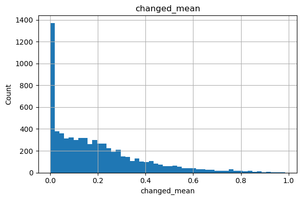
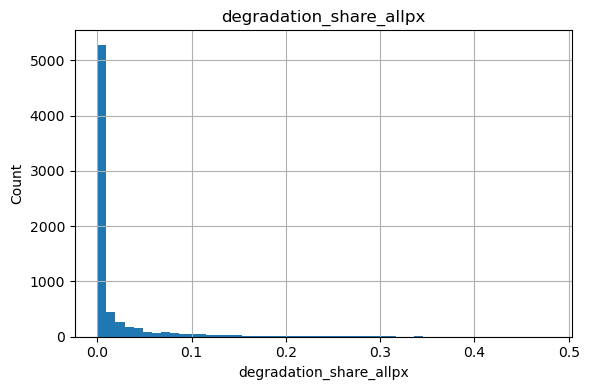
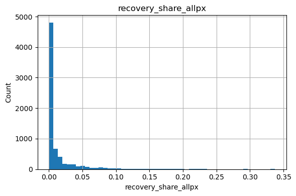
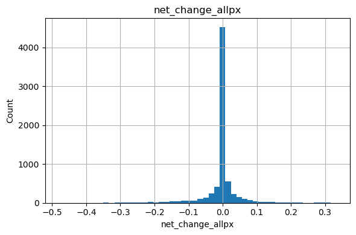
# =========================
# 9. 看“变化多”是不是等于“退化多”
# =========================
plt.figure(figsize=(6, 4))
plt.scatter(
df_model["changed_mean"],
df_model["degradation_share_allpx"],
s=5,
alpha=0.3
)
plt.xlabel("changed_mean")
plt.ylabel("degradation_share_allpx")
plt.title("Changed vs Degradation (all-pixel)")
plt.tight_layout()
plt.show()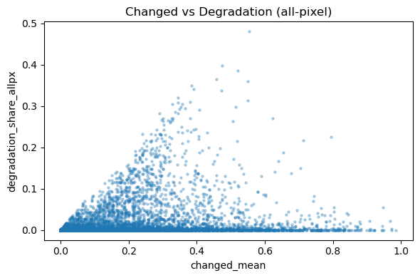
print(df_model[["changed_mean", "degradation_share_allpx"]].corr(method="pearson"))
print(df_model[["changed_mean", "degradation_share_allpx"]].corr(method="spearman")) changed_mean degradation_share_allpx
changed_mean 1.000000 0.190251
degradation_share_allpx 0.190251 1.000000
changed_mean degradation_share_allpx
changed_mean 1.000000 0.329313
degradation_share_allpx 0.329313 1.000000import pandas as pd
import matplotlib.pyplot as plt
# 只保留要用的两列，去掉缺失
tmp = df_model[["changed_mean", "degradation_share_allpx"]].dropna().copy()
# 把 changed_mean 分成 20 个箱
tmp["changed_bin"] = pd.cut(tmp["changed_mean"], bins=20)
# 每个箱里，计算平均退化比例和样本数
bin_stats = (
tmp.groupby("changed_bin", observed=False)["degradation_share_allpx"]
.agg(["mean", "count"])
.reset_index()
)
# 取每个区间的中点，方便画线
bin_stats["bin_mid"] = bin_stats["changed_bin"].apply(lambda x: x.mid)
print(bin_stats.head())
# 画分箱平均线
plt.figure(figsize=(6, 4))
plt.plot(bin_stats["bin_mid"], bin_stats["mean"], marker="o")
plt.xlabel("changed_mean (binned)")
plt.ylabel("mean degradation_share_allpx")
plt.title("Binned relationship: Change vs Degradation")
plt.tight_layout()
plt.show() changed_bin mean count bin_mid
0 (-0.000986, 0.0493] 0.001356 1938 0.024157
1 (0.0493, 0.0986] 0.006624 805 0.073950
2 (0.0986, 0.148] 0.011099 781 0.123300
3 (0.148, 0.197] 0.018875 716 0.172500
4 (0.197, 0.246] 0.029626 652 0.221500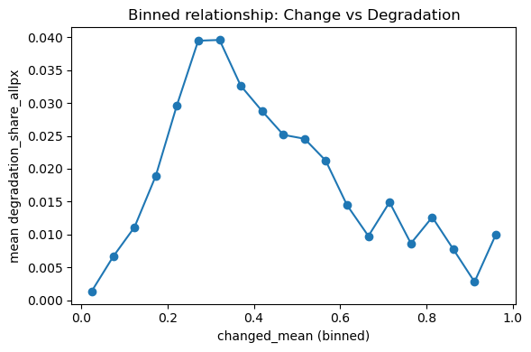
plt.figure(figsize=(6, 4))
plt.scatter(
df_model["changed_mean"],
df_model["degradation_share_allpx"],
s=5,
alpha=0.15
)
plt.xlabel("changed_mean")
plt.ylabel("degradation_share_allpx")
plt.title("Changed vs Degradation (all-pixel)")
plt.tight_layout()
plt.show()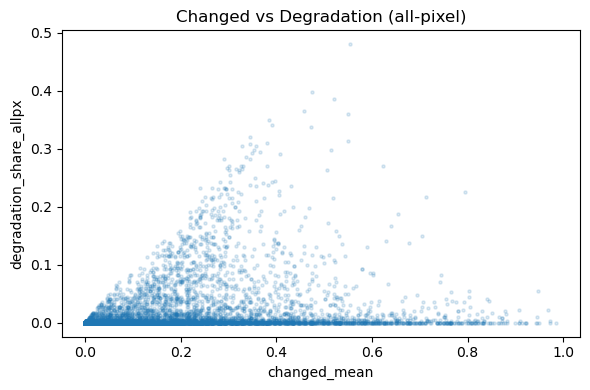
plt.figure(figsize=(6, 4))
plt.hexbin(
df_model["changed_mean"],
df_model["degradation_share_allpx"],
gridsize=35
)
plt.xlabel("changed_mean")
plt.ylabel("degradation_share_allpx")
plt.title("Change vs Degradation Density")
plt.colorbar(label="Count")
plt.tight_layout()
plt.show()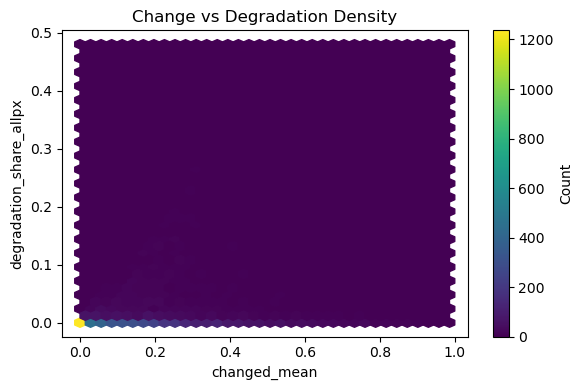
plt.figure(figsize=(6, 4))
plt.scatter(
df_model["changed_mean"],
df_model["recovery_share_allpx"],
s=5,
alpha=0.15
)
plt.xlabel("changed_mean")
plt.ylabel("recovery_share_allpx")
plt.title("Changed vs Recovery (all-pixel)")
plt.tight_layout()
plt.show()
print(df_model[["changed_mean", "recovery_share_allpx"]].corr(method="pearson"))
print(df_model[["changed_mean", "recovery_share_allpx"]].corr(method="spearman"))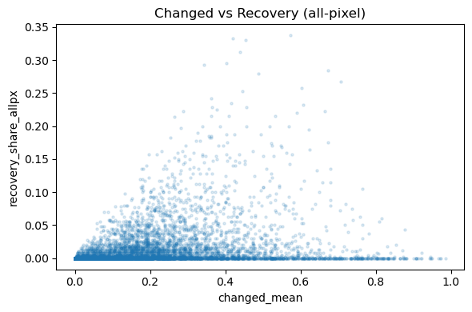
changed_mean recovery_share_allpx
changed_mean 1.000000 0.262184
recovery_share_allpx 0.262184 1.000000
changed_mean recovery_share_allpx
changed_mean 1.000000 0.414452
recovery_share_allpx 0.414452 1.000000# changed_mean vs recovery_share_allpx 分箱平均线
import pandas as pd
import matplotlib.pyplot as plt
tmp = df_model[["changed_mean", "recovery_share_allpx"]].dropna().copy()
# 分 20 个箱
tmp["changed_bin"] = pd.cut(tmp["changed_mean"], bins=20)
# 每个箱的平均 recovery 和样本数
bin_stats_rec = (
tmp.groupby("changed_bin", observed=False)["recovery_share_allpx"]
.agg(["mean", "count"])
.reset_index()
)
# 取区间中点作为 x
bin_stats_rec["bin_mid"] = bin_stats_rec["changed_bin"].apply(lambda x: x.mid)
print(bin_stats_rec.head())
# 画图
plt.figure(figsize=(6, 4))
plt.plot(bin_stats_rec["bin_mid"], bin_stats_rec["mean"], marker="o")
plt.xlabel("changed_mean (binned)")
plt.ylabel("mean recovery_share_allpx")
plt.title("Binned relationship: Change vs Recovery")
plt.tight_layout()
plt.show() changed_bin mean count bin_mid
0 (-0.000986, 0.0493] 0.000775 1938 0.024157
1 (0.0493, 0.0986] 0.004651 805 0.073950
2 (0.0986, 0.148] 0.009126 781 0.123300
3 (0.148, 0.197] 0.014883 716 0.172500
4 (0.197, 0.246] 0.019043 652 0.221500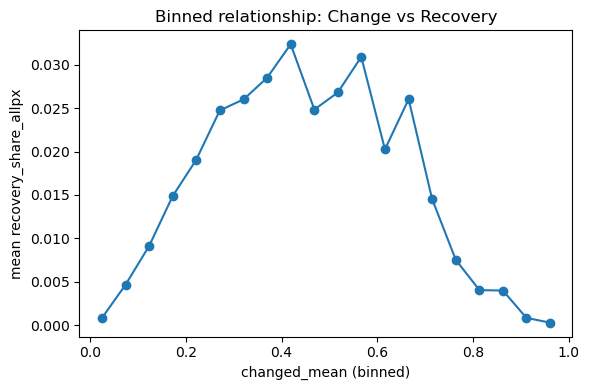
print(df_model[["changed_mean", "recovery_share_allpx"]].corr(method="pearson"))
print(df_model[["changed_mean", "recovery_share_allpx"]].corr(method="spearman")) changed_mean recovery_share_allpx
changed_mean 1.000000 0.262184
recovery_share_allpx 0.262184 1.000000
changed_mean recovery_share_allpx
changed_mean 1.000000 0.414452
recovery_share_allpx 0.414452 1.000000# =========================
# 10. 找最退化的格网
# =========================
worst_cells = df_model.sort_values("net_change_allpx").head(20)
print("\n最强净退化格网：")
print(
worst_cells[
[
"net_change_allpx",
"degradation_share_allpx",
"recovery_share_allpx",
"changed_mean",
"lulc_early_mode",
"lulc_recent_mode"
]
]
)
最强净退化格网：
net_change_allpx degradation_share_allpx recovery_share_allpx \
5957 -0.480000 0.480000 0.000000
5026 -0.385000 0.385000 0.000000
5506 -0.382500 0.397500 0.015000
5731 -0.360000 0.360000 0.000000
3075 -0.350000 0.350000 0.000000
3071 -0.340000 0.340000 0.000000
4181 -0.332500 0.365000 0.032500
4182 -0.315791 0.320764 0.004973
5729 -0.315000 0.337500 0.022500
4803 -0.310000 0.310000 0.000000
3958 -0.300000 0.305000 0.005000
2625 -0.295000 0.305000 0.010000
3074 -0.295000 0.297500 0.002500
3078 -0.295000 0.295000 0.000000
5737 -0.295000 0.307500 0.012500
5044 -0.290000 0.312500 0.022500
3517 -0.285000 0.285000 0.000000
5061 -0.280000 0.290000 0.010000
5730 -0.277500 0.292500 0.015000
3235 -0.277500 0.282500 0.005000
changed_mean lulc_early_mode lulc_recent_mode
5957 0.55500 2.0 7.0
5026 0.52000 5.0 7.0
5506 0.47500 2.0 7.0
5731 0.55000 2.0 7.0
3075 0.38500 2.0 7.0
3071 0.39000 2.0 7.0
4181 0.45750 2.0 7.0
4182 0.34563 7.0 7.0
5729 0.47250 2.0 7.0
4803 0.38000 5.0 7.0
3958 0.32750 2.0 7.0
2625 0.35750 2.0 7.0
3074 0.35250 2.0 7.0
3078 0.36500 5.0 7.0
5737 0.34500 2.0 7.0
5044 0.55000 7.0 7.0
3517 0.33750 2.0 7.0
5061 0.40750 2.0 7.0
5730 0.35000 2.0 2.0
3235 0.29000 7.0 7.0 # =========================
# 11. 找退化比例最高的格网
# =========================
top_deg = df_model.sort_values("degradation_share_allpx", ascending=False).head(20)
print("\n退化比例最高格网：")
print(
top_deg[
[
"degradation_share_allpx",
"net_change_allpx",
"recovery_share_allpx",
"changed_mean",
"lulc_early_mode",
"lulc_recent_mode"
]
]
)
退化比例最高格网：
degradation_share_allpx net_change_allpx recovery_share_allpx \
5957 0.480000 -0.480000 0.000000
5506 0.397500 -0.382500 0.015000
5026 0.385000 -0.385000 0.000000
4181 0.365000 -0.332500 0.032500
5731 0.360000 -0.360000 0.000000
3075 0.350000 -0.350000 0.000000
3071 0.340000 -0.340000 0.000000
5729 0.337500 -0.315000 0.022500
4182 0.320764 -0.315791 0.004973
5044 0.312500 -0.290000 0.022500
4803 0.310000 -0.310000 0.000000
5737 0.307500 -0.295000 0.012500
3958 0.305000 -0.300000 0.005000
2625 0.305000 -0.295000 0.010000
2183 0.297500 -0.275000 0.022500
3074 0.297500 -0.295000 0.002500
3078 0.295000 -0.295000 0.000000
5730 0.292500 -0.277500 0.015000
5061 0.290000 -0.280000 0.010000
3517 0.285000 -0.285000 0.000000
changed_mean lulc_early_mode lulc_recent_mode
5957 0.55500 2.0 7.0
5506 0.47500 2.0 7.0
5026 0.52000 5.0 7.0
4181 0.45750 2.0 7.0
5731 0.55000 2.0 7.0
3075 0.38500 2.0 7.0
3071 0.39000 2.0 7.0
5729 0.47250 2.0 7.0
4182 0.34563 7.0 7.0
5044 0.55000 7.0 7.0
4803 0.38000 5.0 7.0
5737 0.34500 2.0 7.0
3958 0.32750 2.0 7.0
2625 0.35750 2.0 7.0
2183 0.51500 2.0 7.0
3074 0.35250 2.0 7.0
3078 0.36500 5.0 7.0
5730 0.35000 2.0 2.0
5061 0.40750 2.0 7.0
3517 0.33750 2.0 7.0 # 1. top lists overlap
worst_idx = set(worst_cells.index)
top_deg_idx = set(top_deg.index)
overlap = worst_idx.intersection(top_deg_idx)
print("重合数量：", len(overlap))
print("重合格网索引：", sorted(list(overlap)))重合数量： 19
重合格网索引： [2625, 3071, 3074, 3075, 3078, 3517, 3958, 4181, 4182, 4803, 5026, 5044, 5061, 5506, 5729, 5730, 5731, 5737, 5957]# 2. mode cross-tab
print(pd.crosstab(top_deg["lulc_early_mode"], top_deg["lulc_recent_mode"]))
print(pd.crosstab(worst_cells["lulc_early_mode"], worst_cells["lulc_recent_mode"]))lulc_recent_mode 2.0 7.0
lulc_early_mode
2.0 1 14
5.0 0 3
7.0 0 2
lulc_recent_mode 2.0 7.0
lulc_early_mode
2.0 1 13
5.0 0 3
7.0 0 3threshold_deg = df_model["degradation_share_allpx"].quantile(0.95)
top5_deg = df_model[df_model["degradation_share_allpx"] >= threshold_deg].copy()
print("top 5% 退化阈值：", threshold_deg)
print("top 5% 格网数量：", len(top5_deg))top 5% 退化阈值： 0.09999999999999998
top 5% 格网数量： 353threshold_net = df_model["net_change_allpx"].quantile(0.05)
top5_worst = df_model[df_model["net_change_allpx"] <= threshold_net].copy()
print("top 5% 净退化阈值：", threshold_net)
print("top 5% 格网数量：", len(top5_worst))top 5% 净退化阈值： -0.07750000000000001
top 5% 格网数量： 353overlap_5 = set(top5_deg.index).intersection(set(top5_worst.index))
print("top 5% overlap 数量：", len(overlap_5))
print("overlap 占退化top5%的比例：", len(overlap_5) / len(top5_deg))
print("overlap 占净退化top5%的比例：", len(overlap_5) / len(top5_worst))top 5% overlap 数量： 315
overlap 占退化top5%的比例： 0.8923512747875354
overlap 占净退化top5%的比例： 0.8923512747875354# =========================
# 10A. 定义 top 5% 退化热点
# =========================
deg_threshold = df_model["degradation_share_allpx"].quantile(0.95)
top5_deg = df_model[df_model["degradation_share_allpx"] >= deg_threshold].copy()
print("退化热点阈值（top 5%）:", deg_threshold)
print("退化热点数量:", len(top5_deg))
print(
top5_deg[
[
"degradation_share_allpx",
"net_change_allpx",
"recovery_share_allpx",
"changed_mean",
"lulc_early_mode",
"lulc_recent_mode"
]
].sort_values("degradation_share_allpx", ascending=False).head(20)
)退化热点阈值（top 5%）: 0.09999999999999998
退化热点数量: 353
degradation_share_allpx net_change_allpx recovery_share_allpx \
5957 0.480000 -0.480000 0.000000
5506 0.397500 -0.382500 0.015000
5026 0.385000 -0.385000 0.000000
4181 0.365000 -0.332500 0.032500
5731 0.360000 -0.360000 0.000000
3075 0.350000 -0.350000 0.000000
3071 0.340000 -0.340000 0.000000
5729 0.337500 -0.315000 0.022500
4182 0.320764 -0.315791 0.004973
5044 0.312500 -0.290000 0.022500
4803 0.310000 -0.310000 0.000000
5737 0.307500 -0.295000 0.012500
2625 0.305000 -0.295000 0.010000
3958 0.305000 -0.300000 0.005000
3074 0.297500 -0.295000 0.002500
2183 0.297500 -0.275000 0.022500
3078 0.295000 -0.295000 0.000000
5730 0.292500 -0.277500 0.015000
5061 0.290000 -0.280000 0.010000
3517 0.285000 -0.285000 0.000000
changed_mean lulc_early_mode lulc_recent_mode
5957 0.55500 2.0 7.0
5506 0.47500 2.0 7.0
5026 0.52000 5.0 7.0
4181 0.45750 2.0 7.0
5731 0.55000 2.0 7.0
3075 0.38500 2.0 7.0
3071 0.39000 2.0 7.0
5729 0.47250 2.0 7.0
4182 0.34563 7.0 7.0
5044 0.55000 7.0 7.0
4803 0.38000 5.0 7.0
5737 0.34500 2.0 7.0
2625 0.35750 2.0 7.0
3958 0.32750 2.0 7.0
3074 0.35250 2.0 7.0
2183 0.51500 2.0 7.0
3078 0.36500 5.0 7.0
5730 0.35000 2.0 2.0
5061 0.40750 2.0 7.0
3517 0.33750 2.0 7.0 # =========================
# 10B. 定义 top 5% 净退化热点
# 最负的 5%，所以用 0.05 分位数
# =========================
net_threshold = df_model["net_change_allpx"].quantile(0.05)
top5_worst = df_model[df_model["net_change_allpx"] <= net_threshold].copy()
print("净退化热点阈值（bottom 5%）:", net_threshold)
print("净退化热点数量:", len(top5_worst))
print(
top5_worst[
[
"net_change_allpx",
"degradation_share_allpx",
"recovery_share_allpx",
"changed_mean",
"lulc_early_mode",
"lulc_recent_mode"
]
].sort_values("net_change_allpx").head(20)
)净退化热点阈值（bottom 5%）: -0.07750000000000001
净退化热点数量: 353
net_change_allpx degradation_share_allpx recovery_share_allpx \
5957 -0.480000 0.480000 0.000000
5026 -0.385000 0.385000 0.000000
5506 -0.382500 0.397500 0.015000
5731 -0.360000 0.360000 0.000000
3075 -0.350000 0.350000 0.000000
3071 -0.340000 0.340000 0.000000
4181 -0.332500 0.365000 0.032500
4182 -0.315791 0.320764 0.004973
5729 -0.315000 0.337500 0.022500
4803 -0.310000 0.310000 0.000000
3958 -0.300000 0.305000 0.005000
3074 -0.295000 0.297500 0.002500
2625 -0.295000 0.305000 0.010000
3078 -0.295000 0.295000 0.000000
5737 -0.295000 0.307500 0.012500
5044 -0.290000 0.312500 0.022500
3517 -0.285000 0.285000 0.000000
5061 -0.280000 0.290000 0.010000
5730 -0.277500 0.292500 0.015000
3235 -0.277500 0.282500 0.005000
changed_mean lulc_early_mode lulc_recent_mode
5957 0.55500 2.0 7.0
5026 0.52000 5.0 7.0
5506 0.47500 2.0 7.0
5731 0.55000 2.0 7.0
3075 0.38500 2.0 7.0
3071 0.39000 2.0 7.0
4181 0.45750 2.0 7.0
4182 0.34563 7.0 7.0
5729 0.47250 2.0 7.0
4803 0.38000 5.0 7.0
3958 0.32750 2.0 7.0
3074 0.35250 2.0 7.0
2625 0.35750 2.0 7.0
3078 0.36500 5.0 7.0
5737 0.34500 2.0 7.0
5044 0.55000 7.0 7.0
3517 0.33750 2.0 7.0
5061 0.40750 2.0 7.0
5730 0.35000 2.0 2.0
3235 0.29000 7.0 7.0 # =========================
# 11. 看两个 5% hotspot 集合的 overlap
# =========================
worst_idx_5 = set(top5_worst.index)
top_deg_idx_5 = set(top5_deg.index)
overlap_5 = worst_idx_5.intersection(top_deg_idx_5)
print("top 5% overlap 数量:", len(overlap_5))
print("overlap 占退化热点比例:", len(overlap_5) / len(top5_deg))
print("overlap 占净退化热点比例:", len(overlap_5) / len(top5_worst))
print("重合格网索引前 30 个:", sorted(list(overlap_5))[:30])top 5% overlap 数量: 315
overlap 占退化热点比例: 0.8923512747875354
overlap 占净退化热点比例: 0.8923512747875354
重合格网索引前 30 个: [1955, 1962, 2176, 2179, 2180, 2182, 2183, 2184, 2398, 2399, 2400, 2401, 2405, 2406, 2407, 2408, 2409, 2410, 2622, 2623, 2624, 2625, 2626, 2627, 2628, 2629, 2630, 2631, 2844, 2847]# =========================
# 12. 5% hotspot 的 mode cross-tab
# =========================
print("top 5% degradation hotspots:")
print(pd.crosstab(top5_deg["lulc_early_mode"], top5_deg["lulc_recent_mode"]))
print("\nbottom 5% net-change hotspots:")
print(pd.crosstab(top5_worst["lulc_early_mode"], top5_worst["lulc_recent_mode"]))top 5% degradation hotspots:
lulc_recent_mode 1.0 2.0 4.0 5.0 7.0
lulc_early_mode
1.0 1 0 0 0 0
2.0 1 95 10 1 90
4.0 0 0 2 0 8
5.0 1 1 3 3 11
7.0 0 1 2 0 123
bottom 5% net-change hotspots:
lulc_recent_mode 1.0 2.0 4.0 5.0 7.0
lulc_early_mode
1.0 1 0 0 0 0
2.0 1 102 11 0 86
4.0 0 0 3 0 11
5.0 2 1 3 3 11
7.0 0 0 2 0 116# =========================
# 13. 核心热点：同时属于两类 5%
# =========================
core_hotspots = df_model.loc[df_model.index.isin(overlap_5)].copy()
print("核心热点数量:", len(core_hotspots))
print(
core_hotspots[
[
"degradation_share_allpx",
"net_change_allpx",
"recovery_share_allpx",
"changed_mean",
"lulc_early_mode",
"lulc_recent_mode"
]
].sort_values("degradation_share_allpx", ascending=False).head(20)
)核心热点数量: 315
degradation_share_allpx net_change_allpx recovery_share_allpx \
5957 0.480000 -0.480000 0.000000
5506 0.397500 -0.382500 0.015000
5026 0.385000 -0.385000 0.000000
4181 0.365000 -0.332500 0.032500
5731 0.360000 -0.360000 0.000000
3075 0.350000 -0.350000 0.000000
3071 0.340000 -0.340000 0.000000
5729 0.337500 -0.315000 0.022500
4182 0.320764 -0.315791 0.004973
5044 0.312500 -0.290000 0.022500
4803 0.310000 -0.310000 0.000000
5737 0.307500 -0.295000 0.012500
2625 0.305000 -0.295000 0.010000
3958 0.305000 -0.300000 0.005000
2183 0.297500 -0.275000 0.022500
3074 0.297500 -0.295000 0.002500
3078 0.295000 -0.295000 0.000000
5730 0.292500 -0.277500 0.015000
5061 0.290000 -0.280000 0.010000
3517 0.285000 -0.285000 0.000000
changed_mean lulc_early_mode lulc_recent_mode
5957 0.55500 2.0 7.0
5506 0.47500 2.0 7.0
5026 0.52000 5.0 7.0
4181 0.45750 2.0 7.0
5731 0.55000 2.0 7.0
3075 0.38500 2.0 7.0
3071 0.39000 2.0 7.0
5729 0.47250 2.0 7.0
4182 0.34563 7.0 7.0
5044 0.55000 7.0 7.0
4803 0.38000 5.0 7.0
5737 0.34500 2.0 7.0
2625 0.35750 2.0 7.0
3958 0.32750 2.0 7.0
2183 0.51500 2.0 7.0
3074 0.35250 2.0 7.0
3078 0.36500 5.0 7.0
5730 0.35000 2.0 2.0
5061 0.40750 2.0 7.0
3517 0.33750 2.0 7.0 import matplotlib.pyplot as pltgdf = gpd.read_file("mongolia_grid_10km.geojson")
print(gdf.shape)
print(gdf.columns.tolist())(7731, 13)
['id', 'changed_mean', 'changed_mode', 'degradation_mean', 'degradation_mode', 'lulc_early_mean', 'lulc_early_mode', 'lulc_recent_mean', 'lulc_recent_mode', 'net_change', 'recovery_mean', 'recovery_mode', 'geometry']gdf_model = gdf[gdf["changed_mean"].notna()].copy()print(gdf_model.shape)(7031, 13)# 无变化格网补 0
gdf_model["degradation_mean"] = gdf_model["degradation_mean"].fillna(0)
gdf_model["recovery_mean"] = gdf_model["recovery_mean"].fillna(0)# whole-grid 指标
gdf_model["degradation_share_allpx"] = (
gdf_model["changed_mean"] * gdf_model["degradation_mean"]
)
gdf_model["recovery_share_allpx"] = (
gdf_model["changed_mean"] * gdf_model["recovery_mean"]
)
gdf_model["net_change_allpx"] = (
gdf_model["recovery_share_allpx"] - gdf_model["degradation_share_allpx"]
)
print(gdf_model.shape)
print(
gdf_model[
[
"changed_mean",
"degradation_share_allpx",
"recovery_share_allpx",
"net_change_allpx"
]
].describe()
)(7031, 19)
changed_mean degradation_share_allpx recovery_share_allpx \
count 7031.000000 7031.000000 7031.000000
mean 0.193102 0.016156 0.012717
std 0.187766 0.040993 0.029708
min 0.000000 0.000000 0.000000
25% 0.040000 0.000000 0.000000
50% 0.147500 0.000000 0.000000
75% 0.283750 0.007500 0.010000
max 0.985714 0.480000 0.337500
net_change_allpx
count 7031.00000
mean -0.00344
std 0.04757
min -0.48000
25% -0.00250
50% 0.00000
75% 0.00250
max 0.33250 # 用之前已经算出来的精确阈值
threshold_deg = 0.09999999999999998
threshold_net = -0.07750000000000001
df_model["is_deg_hotspot_5"] = (
df_model["degradation_share_allpx"] >= threshold_deg
).astype(int)
df_model["is_netdeg_hotspot_5"] = (
df_model["net_change_allpx"] <= threshold_net
).astype(int)
df_model["is_core_hotspot"] = (
(df_model["is_deg_hotspot_5"] == 1) &
(df_model["is_netdeg_hotspot_5"] == 1)
).astype(int)
print(df_model["is_deg_hotspot_5"].sum())
print(df_model["is_netdeg_hotspot_5"].sum())
print(df_model["is_core_hotspot"].sum())353
353
315# 先确保两边顺序一致
df_model = df_model.reset_index(drop=True)
gdf_model = gdf_model.reset_index(drop=True)
print(len(df_model), len(gdf_model))7031 7031df_model = df_model.reset_index(drop=True)
gdf_model = gdf_model.reset_index(drop=True)
gdf_model["is_deg_hotspot_5"] = df_model["is_deg_hotspot_5"]
gdf_model["is_netdeg_hotspot_5"] = df_model["is_netdeg_hotspot_5"]
gdf_model["is_core_hotspot"] = df_model["is_core_hotspot"]
print(gdf_model["is_deg_hotspot_5"].sum())
print(gdf_model["is_netdeg_hotspot_5"].sum())
print(gdf_model["is_core_hotspot"].sum())353
353
315#背景分布图
for col, title in [
("changed_mean", "Changed mean"),
("degradation_share_allpx", "Degradation share (all-pixel)"),
("recovery_share_allpx", "Recovery share (all-pixel)"),
("net_change_allpx", "Net change (all-pixel)")
]:
ax = gdf_model.plot(column=col, legend=True, figsize=(8, 5))
ax.set_title(title)
ax.set_axis_off()
plt.show()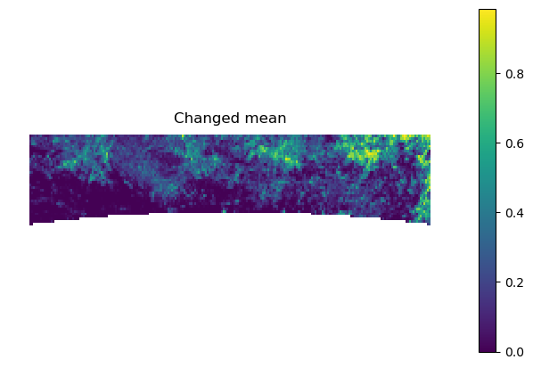
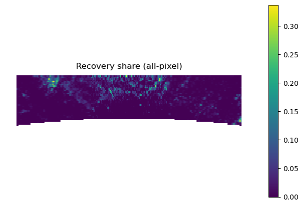
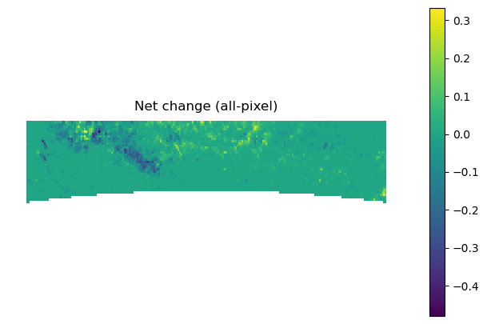
#热点
for col, title in [
("is_deg_hotspot_5", "Top 5% degradation hotspots"),
("is_netdeg_hotspot_5", "Bottom 5% net-degradation hotspots"),
("is_core_hotspot", "Core hotspots")
]:
ax = gdf_model.plot(column=col, legend=True, figsize=(8, 5))
ax.set_title(title)
ax.set_axis_off()
plt.show()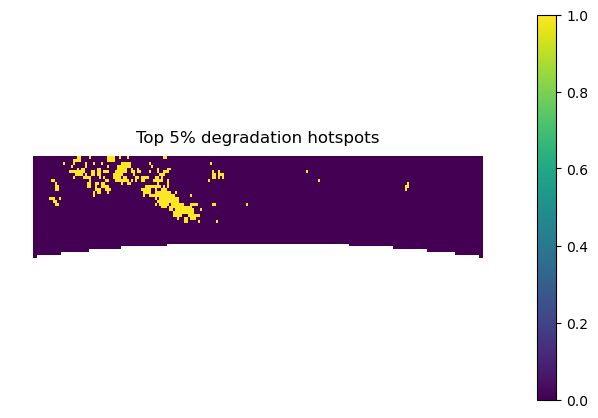
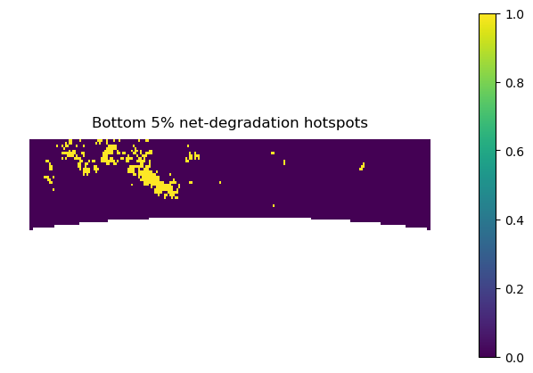
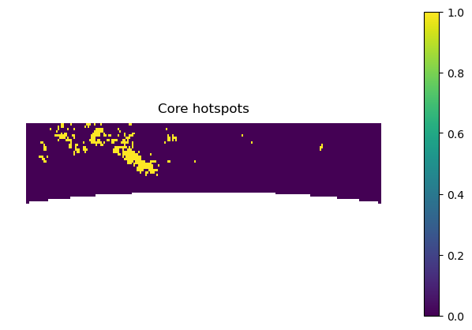
#叠加：
ax = gdf_model.plot(column="net_change_allpx", legend=True, figsize=(8, 5))
gdf_model[gdf_model["is_core_hotspot"] == 1].boundary.plot(ax=ax, linewidth=0.8)
ax.set_title("Core hotspots over net change surface")
ax.set_axis_off()
plt.show()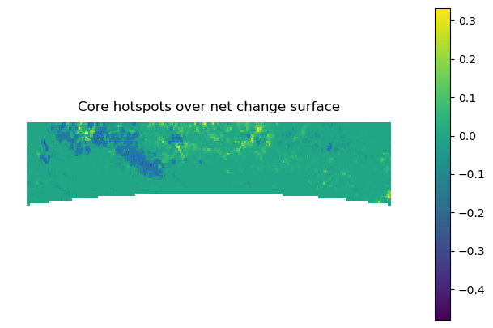
# 看看分布
# 先投影到平面坐标系
gdf_proj = gdf_model.to_crs("EPSG:3857").copy()
# 在投影坐标系里算 centroid
gdf_proj["centroid"] = gdf_proj.geometry.centroid
# 如果你还想要经纬度，再转回 WGS84
centroids_wgs84 = gdf_proj["centroid"].to_crs("EPSG:4326")
gdf_model["centroid_x"] = centroids_wgs84.x
gdf_model["centroid_y"] = centroids_wgs84.y
# 按中位数纬度分南北
lat_mid = gdf_model["centroid_y"].median()
gdf_model["ns_half"] = gdf_model["centroid_y"].apply(
lambda y: "north" if y >= lat_mid else "south"
)
summary_ns = gdf_model.groupby("ns_half")[
[
"changed_mean",
"degradation_share_allpx",
"recovery_share_allpx",
"net_change_allpx",
"is_deg_hotspot_5",
"is_netdeg_hotspot_5",
"is_core_hotspot"
]
].mean()
print(summary_ns)
changed_mean degradation_share_allpx recovery_share_allpx \
ns_half
north 0.274553 0.024671 0.020827
south 0.108414 0.007304 0.004283
net_change_allpx is_deg_hotspot_5 is_netdeg_hotspot_5 \
ns_half
north -0.003843 0.077009 0.076172
south -0.003020 0.022338 0.023209
is_core_hotspot
ns_half
north 0.067801
south 0.020888 #热点成片吗
core = gdf_model[gdf_model["is_core_hotspot"] == 1].copy()
ax = gdf_model.boundary.plot(figsize=(8, 5), linewidth=0.2)
core.boundary.plot(ax=ax, linewidth=1.0)
ax.set_title("Core hotspot boundaries")
ax.set_axis_off()
plt.show()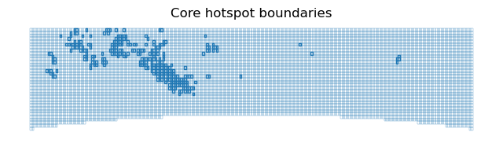
#我们的target设定为target_main = "degradation_share_allpx"
target_main = "degradation_share_allpx"
target_aux = "net_change_allpx"
target_binary = "is_deg_hotspot_5"
target_core = "is_core_hotspot"
print(target_main, target_aux, target_binary, target_core)degradation_share_allpx net_change_allpx is_deg_hotspot_5 is_core_hotspot# 去掉不必要列
export_cols = [
"changed_mean",
"degradation_mean",
"recovery_mean",
"degradation_share_allpx",
"recovery_share_allpx",
"net_change_allpx",
"is_deg_hotspot_5",
"is_netdeg_hotspot_5",
"is_core_hotspot",
"lulc_early_mode",
"lulc_recent_mode",
"geometry"
]
gdf_export = gdf_model[export_cols].copy()
gdf_export.to_file(
"mongolia_grid_10km_cleaned.geojson",
driver="GeoJSON"
)
print("已导出 cleaned geojson")已导出 cleaned geojsonprint((gdf_model["degradation_share_allpx"] == deg_threshold).sum())
print((gdf_model["net_change_allpx"] == net_threshold).sum())
print(gdf_model["degradation_share_allpx"].sort_values().tail(10))
print(gdf_model["net_change_allpx"].sort_values().head(10))9
6
5043 0.312500
4181 0.320764
5728 0.337500
3070 0.340000
3074 0.350000
5730 0.360000
4180 0.365000
5025 0.385000
5505 0.397500
5956 0.480000
Name: degradation_share_allpx, dtype: float64
5956 -0.480000
5025 -0.385000
5505 -0.382500
5730 -0.360000
3074 -0.350000
3070 -0.340000
4180 -0.332500
4181 -0.315791
5728 -0.315000
4802 -0.310000
Name: net_change_allpx, dtype: float64